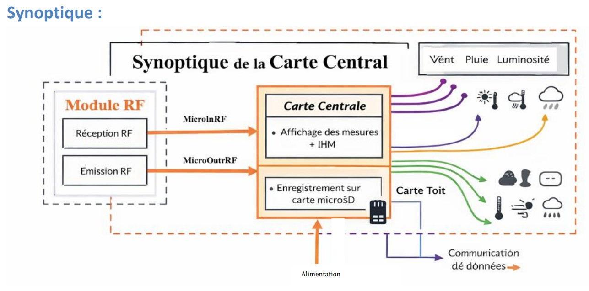
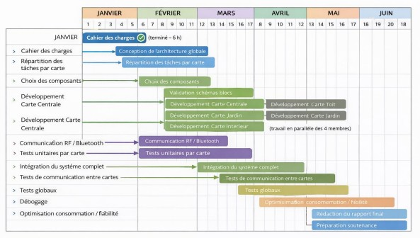

Dans le cadre d’un projet de troisième année de BUT GEII, j’ai participé à la rédaction
du cahier des charges d’une station météo connectée modulaire. Ce document a permis
de définir les besoins, les fonctions principales, les contraintes techniques et
l’architecture générale du système.
Contexte du projet
Ce projet a été réalisé en équipe de quatre étudiants. Contrairement à un projet
disposant d’un cahier des charges fourni par un client, nous avons dû définir
nous-mêmes les objectifs du système à partir des contraintes imposées par la formation.
Les principales exigences étaient la mise en œuvre d’une communication radio haute
fréquence étudiée en cours, ainsi que le développement d’une interface homme-machine
permettant l’exploitation des données collectées.
Objectif général :
concevoir une station météo capable de mesurer différents paramètres
environnementaux, de transmettre les informations à distance et de les centraliser
sur une interface unique.
Document associé
Le cahier des charges complet est disponible en téléchargement afin de présenter
les choix fonctionnels et l’organisation générale du projet.
La première étape a consisté à identifier les besoins auxquels devait répondre le
système. Nous avons défini une architecture permettant de surveiller plusieurs
environnements autour d’une habitation grâce à des modules spécialisés.
Carte centrale : supervision, affichage, sauvegarde et échanges radio.
Carte toit : mesures météorologiques extérieures.
Carte jardin : suivi de l’environnement du sol et de l’air.
Carte intérieure : surveillance du confort et de la qualité de l’air.
Ma contribution
Ma contribution principale a porté sur la carte centrale ainsi que sur les aspects liés
aux communications radio entre les différents modules. J’ai participé à la définition
des fonctions de service associées à cette carte et à leur formalisation dans le cahier
des charges.
La carte centrale devait assurer plusieurs rôles essentiels :
recevoir les informations provenant des modules ;
identifier la provenance des mesures ;
gérer les échanges radio ;
afficher les données sur une interface homme-machine ;
sauvegarder les données sur carte microSD.
Traduction des besoins en exigences techniques
Cette phase de rédaction a nécessité de transformer des besoins utilisateurs en
exigences fonctionnelles précises. Par exemple, l’utilisateur devait pouvoir consulter
rapidement les mesures collectées, accéder à des pages détaillées par module et
paramétrer différents réglages depuis l’écran tactile.
Ces besoins ont été reformulés sous forme d’exigences techniques : affichage clair
et lisible, réception fiable des trames radio, gestion des erreurs de communication,
configuration par écran tactile et sauvegarde des données au format exploitable
sur ordinateur.
Pour illustrer cette compétence, j’ai choisi de mettre en avant deux éléments issus
du cahier des charges : le synoptique de la carte centrale et le diagramme de Gantt.
Ces éléments montrent à la fois la formalisation technique du système et
l’organisation du projet.

Synoptique de la carte centrale : représentation des blocs fonctionnels,
des échanges radio, de l’interface utilisateur et du stockage sur carte microSD.

Diagramme de Gantt : planification des étapes du projet, de la rédaction
du cahier des charges jusqu’aux tests et à l’intégration du système complet.
Bilan personnel
Cette expérience m’a permis de développer une méthodologie de recueil et d’analyse
du besoin, de comprendre l’importance d’un cahier des charges structuré dans la
réussite d’un projet technique et d’acquérir des compétences dans la rédaction
d’exigences fonctionnelles et de contraintes techniques.
Elle m’a également permis de prendre conscience du rôle central du cahier des charges
comme document de référence tout au long du cycle de développement d’un système
électronique.
Projet de troisième année – BUT GEII / Parcours ESE – Station météo connectée modulaire